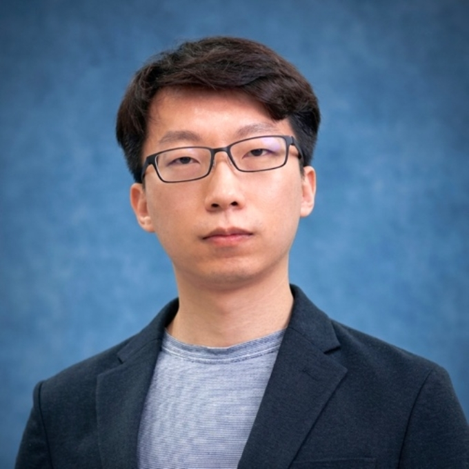

Team

Bao Zhao 赵宝
Principal Investigator
Tenure-track Professor and PhD Supervisor
Division of Marine Science & Technology
Professor Zhao works on energy harvesting, nonlinear metamaterials, structural sensing, and self-powered intelligent systems.
Join Us
LASS is a new and growing research group. We welcome students and collaborators who are interested in autonomous structures and systems.
Master's and PhD Students
Relevant backgrounds include mechanics, mechanical engineering, electronics, materials, control, sensing, artificial intelligence, and related fields. Please send a short introduction and CV to baozhao@bit.edu.cn.
Visitors and Collaborators
We welcome research exchanges and collaborations across structural dynamics, power electronics, smart materials, sensing, and intelligent systems.